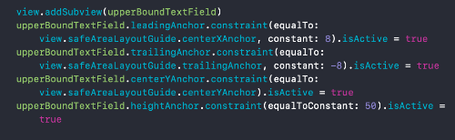

Home
Basics
Hello World
Random Number Generator
So now that you have the Hello World app under your belt let's go with something a little more complex,
a random number generator app that the user can interact with! At the end of this app, the user will be able to enter a
lower and upper bound and we will give them a random number between that range. We will have a simple error checking to
make sure that the users upper bound is indeed greater than the lower bound. Are you ready to get started? We will go ahead
and start off from our Hello World app since the inital setup to do everything programatically is already done. The first thing
I will ask you to do is to delete the label contraints and to rename the label constant to something more meaningful like,
randomNumberLabel and also delete the line where we set the text to "Hello World" since we won't be needing it. After doing so,
you should have the following and if you run the app you will see a white screen.
=For this lesson, I will take a slightly different approach. I will be showing you code snippets
of what we will be doing and then explain what each line does. So let's get started making our RNG app!
Declaring a constant with keyword let and calling it lowerBoundTextField and declaring it a UITextField
Making constant t be of type UITextField()
This will allow our text field to use auto layout
Setting the background color of our text field to a nice cyan color
Aligning the text in our text field to the center
When the user clicks on the text field, it will show a numeric pad instead of the normal keyboard
We return the t constant, essentially making it the lowerBoundTextField
Declaring a constant with keyword let and calling it upperBoundTextField and declaring it a UITextField
Making constant t be of type UITextField()
This will allow our text field to use auto layout
Setting the background color of our text field to a nice cyan color
Aligning the text in our text field to the center
When the user clicks on the text field, it will show a numeric pad instead of the normal keyboard
We return the t constant, essentially making it the upperBoundTextField
Declaring a constant with keyword let and calling it generateNumberButton and declaring it a UIButton
Making constant b be of type UIButton()
This will allow our text field to use auto layout
Setting the title of the button's text to "Generate"
Setting the backgroung color of the button to black
Telling Xcode to go to the generateNumber function when this button is touched inside
We return the b constant, essentially making it the generateNumberButton
Declare a function called generateNumber. The @objc is needed so that we are able to call it when
the user taps the button
We cast the value that the user enters into the lower bound text field and set it to the lowerBound constant.
If Swift is unable to cast it to a number for whatever reason, it will exit out of the function and not run
the rest of the code in the function. ?? 0 means that if no text is in the text field it will set it to "0"
We cast the value that the user enters into the upper bound text field and set it to the upperBound constant.
If Swift is unable to cast it to a number for whatever reason, it will exit out of the function and not run
the rest of the code in the function. ?? 0 means that if no text is in the text field it will set it to "0"
We make sure that the upper bound is greater than the lower bound to generate a number. If it is not,
we skip the if statement and in our case it does nothing else
We generate a number from the lowerBound to the upperBound, cast it to a String and set the result of that
equal to the constant num
We set text of randomNumberLabel equal to num (The random number we generated in the previous step)
Instead of populating out viewDidLoad() with a bunch of code and making it look messy, we will
anchor our variable in a function called setUpView and just call it inside of viewDidLoad
We declare a function called setUpView
Add lowerBoundTextField to the screen
Set the leading anchor of lowerBoundTextField equal to the edge of the screen and 8 pixels towards the inside
Set the trailing anchor of lowerBoundTextField equal to middle of the screen and 8 pixels
towards the left.
Set the center of the Y value of lowerBoundTextField to the center of the screen accross the y-axis
Set the height of lowerBoundTextField to 50

Add upperBoundTextField to the screen
Set the leading(left) anchor of upperBoundTextField to the center of the screen and 8 pixels
to the right
Set the trailing(right) anchor of upperBoundTextField to the right of the screen and 8 pixels
towards the inside
Set the center of the Y value of upperBoundTextField to the center of the screen accross the y-axis
Set the height of lowerBoundTextField to 50
Add randomNumberLabel to the screen
Set the leading(left) anchor of randomNumberLabel to the center of the screen and 8 pixels
to the right
Set the trailing(right) anchor of randomNumberLabel to the right of the screen and 8 pixels
towards the inside
Set the height of randomNumberLabel to be 200
Set the bottom anchor of randomNumberLabel to be 25 pixels above the top anchor of lowerBoundTextField
Add generateNumberButton to the screen
Set the width of generateNumberButton to be half of the screen
Center generateNumberButton to the center of the screen across the x axis
Set the top anchor of generateNumberButton to be 25 pixels below the bottom anchor of lowerBoundTextField
Set the height of generateNumberButton to 100 pixels
github page.
Disclaimer: The information on this page is fictitous.